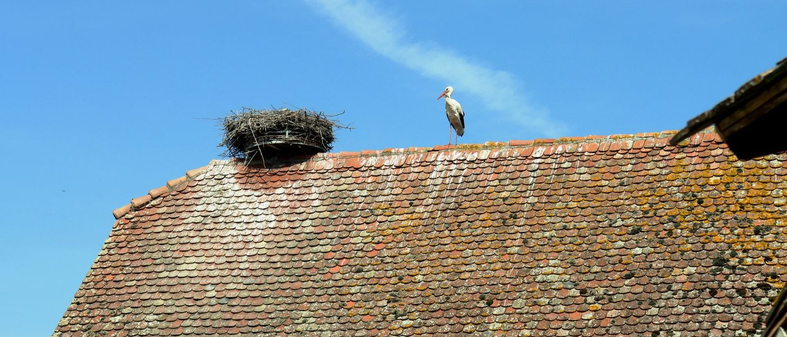

Entretenir sa toiture en Moselle : mousse, gel et climat lorrain
En Lorraine, une toiture vieillit plus vite qu'ailleurs. Hivers froids, humidité et cycles de gel répétés mettent la couverture à rude épreuve. Un entretien régulier reste le moyen le plus simple d'éviter les infiltrations et les grosses réparations.
Pourquoi le climat lorrain fatigue les toitures
La Moselle connaît des hivers marqués, avec de nombreux passages sous zéro et des épisodes de neige. Ce sont surtout les cycles de gel et de dégel qui abîment une couverture : l'eau s'infiltre dans les micro-fissures et la porosité des tuiles, gèle, se dilate, et fait éclater ou soulever le matériau saison après saison.
L'humidité ambiante et les nombreuses zones boisées favorisent aussi le développement de mousses et de lichens, en particulier sur les versants nord, à l'ombre ou peu ensoleillés. La mousse n'est pas qu'un problème esthétique : elle retient l'eau contre les tuiles, accélère leur dégradation et finit par se glisser sous les éléments de couverture.
Les points de vigilance avant l'hiver
- Les gouttières et chéneaux : feuilles et mousses les bouchent, l'eau déborde et s'infiltre le long des murs. À nettoyer chaque automne.
- Les tuiles ou ardoises cassées, fissurées ou déplacées : le vent et le gel les fragilisent. Une seule tuile manquante suffit à créer une fuite.
- Les solins et le faîtage : ce sont les points de jonction (cheminée, mur, arêtes) où les infiltrations commencent le plus souvent.
- La présence de mousse : si les versants verdissent, un démoussage s'impose avant que les dégâts ne s'installent.
À quelle fréquence entretenir sa toiture ?
Pour une toiture en Moselle, nous recommandons une inspection visuelle chaque année, idéalement à l'automne, et un démoussage tous les deux à trois ans selon l'exposition. Un traitement hydrofuge appliqué après le démoussage protège durablement la couverture en limitant la pénétration de l'eau, donc les effets du gel.
À éviter : le nettoyeur haute pression. Un jet trop puissant décape la surface des tuiles, retire leur protection et accélère leur usure. Le démoussage doit se faire en douceur, avec des produits adaptés et depuis une position sécurisée.
Quand faire appel à un couvreur ?
Monter sur un toit présente un risque réel, surtout par temps humide ou gelé. Au-delà de la sécurité, un couvreur repère les débuts d'infiltration invisibles depuis le sol et utilise les bons produits de traitement. Un entretien professionnel régulier coûte bien moins cher qu'une réfection partielle rendue nécessaire par des années de négligence.
Questions fréquentes
Quand faire vérifier sa toiture en Moselle ?
Une inspection visuelle chaque année, idéalement à l'automne avant l'hiver, permet de repérer à temps une tuile déplacée, une gouttière bouchée ou un début d'infiltration.
Pourquoi le gel abîme-t-il les tuiles ?
L'eau s'infiltre dans les micro-fissures et la porosité des tuiles, gèle, se dilate, puis fait éclater ou soulever le matériau. En Lorraine, les cycles de gel et de dégel répétés accélèrent ce phénomène.
Quels points vérifier sur son toit avant l'hiver ?
Les gouttières et chéneaux, les tuiles ou ardoises cassées ou déplacées, les solins et le faîtage, et la présence de mousse sur les versants.
Besoin d'un entretien de toiture en Moselle ?
Inspection, démoussage, traitement hydrofuge. Devis gratuit et sans engagement.
Demander un devis gratuit
Droit local Toiture et droit local Alsace-Moselle : ce qu'il faut savoir Jours fériés locaux, livre foncier, mitoyenneté : les particularités qui influent sur vos travaux de couverture. Lire l'article →